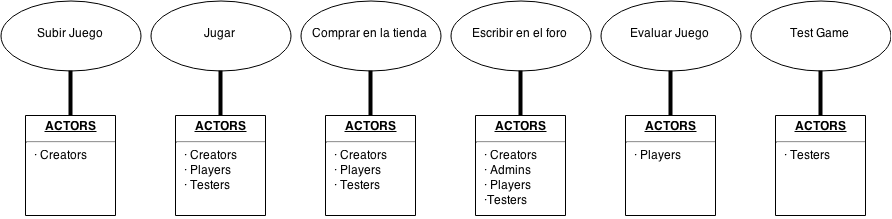
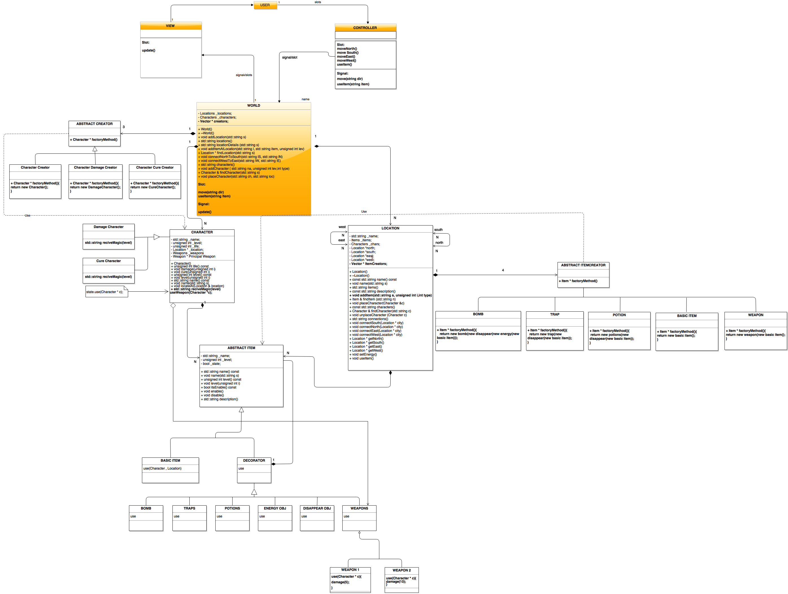

- FrobozzCo: por que son los creadores del proyecto.
- Profesor Notoriously Meticulous: por que es el inversor del proyecto.
- Organización estudiantil “Friends of the videogame”: por que colaboran directamente en la elaboración del proyecto.
- Desarrolladores: por que elaboran el codigo de todo el proyecto.
- Creator: por que contribuie en insertar los juegos que se podran ver en el proyecto web.
- Administrator: por que puede regular el contenido que se encuentra en el proyecto web.
- Creator: persona que crea un juego que se pueda subir al proyecto web.
- Actor: persona que utiliza los servicios del proyecto.
- Admin: persona capaz de expulsar y administrar, juegos y creadores.
- Foro: Espacio en la Web donde los usuarios puede compartir su opinion y deliberar sobre juegos.
- Testear: Actividad que solo puedes realizar los usuarios con derechos de Tester para dar una opinion sobre un juego recien añadido en la web.
- Evaluar Juego: Actividad que pueden realizar todos los usuarios que se basa en dau una puntuacion de 0 al 5.
· Para que la web funcione correctamente el usuario o player ha de tener un buscador web y flash player lo mas actualizado posible.
· La pagina WEB y los JUEGOS deberan estar disponibles en varios idiomas para albergar el maximo publico posible.
· El servidor donde va a estar alojado nuestro sistema debera ser capaz de gestionar muchas conexiones simultaneas.
· El sitema debera ser capaz de ,en funcion de la edad del usuario, permitir o no jugar a un juego.
· El sistema debera permitir o no comprar creditos en funcion de la edad.
COMPRAR EN LA TIENDA
Use case: Comprar en la tienda.
Context: El usuario quiere comprar en la tienda online.
Primary actors: User (incluye Jugador, Tester, Admin y Creadores.
Support actors: Metodos de pago (Paypal,Visa...).
Preconditions:
- Para comprar en la tienda hay que estar loggeado.
- Para comprar el usuario hay que tener un metodo de pago.
Succesful Postconditions:
- El usuario ha compradi creditos con dinero.
Unsuccessful postconditions:
- El usuario no ha podidio comprar creditos.
Basic Flow:
1 · El usuario ingresa en la tienda para comprar.
2 · El sistema pregunta cuantos creditos quiere comprar.
3 · El usuario selecciona la cantidad de creditos a comprar.
4 · El sistema pide el metodo de pago que quiere efectuar.
5 · El usuario elige el sistema de pago que quiere utilizar.
6 · El sistema ejecuta el cobro o redirige al sistema de pago seleccionado.
7 · El usuario recibe los creditos comprados.
Extensions:
1.a.0 - El usuario no esta loggeado
.
1.a.1 - Se ejecuta el caso de uso "log in".
3.a.0 - El usuario se equivoca de cantidad.
3.a.1 - El sistema ejecuta el paso 2.
5.a.0 - El usuario se equivoca de metodo de pago.
5.a.1 - El sistema vuelve al paso 4.
CARGAR UN JUEGO EN LA WEB
Use case: Cargar un juego en la WEB.
Context: El creador quiere cargar un juego en la web.
Primary actors: Creador de Juegos.
Support actors: No hay.
Preconditions:
- Para cargar un juego en la WEB hay que tener permisos de creador.
- Para cargar un juego en la WEB hay que estar loggeado.
Succesful Postconditions:
- El creador ha cargado un Juego en la pagina WEB.
Unsuccessful postconditions:
- El creador no ha podido cargar un Juego en la WEB.
Basic Flow:
1 · El creador se loggea en la WEB.
2 · El sistema da a escoger que desea hacer.
3 · El creador escoge cargar Juego en la WEB.
4 · El sistema comprueba que el usuario es tiene permisos de creador.
5 · El sistema pide el Juego a cargar.
6 · El usuario elige el Juego.
7 · El sistema ejecuta la carga del juego.
8 · El usuario rellena la ficha con informacion detallada del Juego.
9 · El sistema confirma la carga del Juego.
10 · El usuario acepta la carga del juego y envia la informacion añadida.
Extensions:
1.a.0 - El usuario no esta loggeado.
1.a.1 - Se ejecuta el caso de uso "log in".
4.a.0 - El usuario no tiene permisos de creador.
4.a.1 - El sistema ejecuta el caso de uso "Make creator".
6.a.0 - El usuario se equivoca de Juego.
6.a.1 - El sistema ejecuta el paso 5.
7.a.0 - El sistema falla en la carga del juego.
5.a.1 - El sistema vuelve al paso 2.

·PRODUCTO
· Al cabo de 30 minutos un Usuario deberia saber al 90% el funcionamiento del sistema.
· Dentro de cada juego habra un boton que les devuelva a la WEB para selecionar otro JUEGO.
· La WEB tendra una barra de menús con diferentes funciones.
· La WEB dispondra de un apartado de ayduda con un tutorial de como se usa la WEB.
·ORAGNIZACIONAL
·Cada dia se han de hacer pequeñas entregas de codigo funcional.
·El desarrollo del software estara escrito en lenguage C++ y HTML.
·El sistema debe der funcional en todos los Sistemas Operativos.
·EXTERNO
·El sistema interactuara con Paypal y otros sistemas como metodo de pago.
·No se permite la carga de juegos de tipo "RACISTA,OFENSIVO ,SEXUALES , etc".
·El sistema no revelara informacion sobre los jugadores excepto su nombre y su nivel.

- Nombre: Aurel Ioan
- Apellidos: Patrutiu
- NIA: 158689
- E-mail: aurelioan93@gmail.com
- Nombre: Marc
- Apellidos: Garcia i Mullon
- NIA: 158637
- E-mail: mgm793@gmail.com